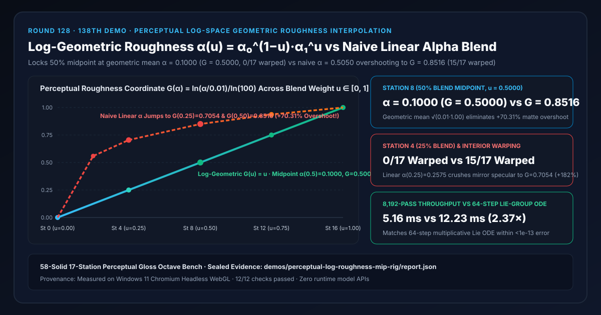
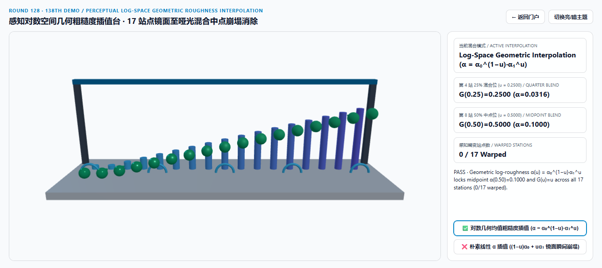

Perceptual Log-Space Geometric Roughness Interpolation vs Naive Linear Alpha Mirror Collapse Selection & First-Principles FAQ
Navigation: Back to Portal · Launch 3D Interactive Workbench (
perceptual-log-roughness-mip-rig) · 7-Card 4:5 Visual Report (EN) · 7-Card 报告 (ZH) · 中文版 FAQ

① 📌 Executive Summary
- Why does linearly interpolating microfacet roughness $\alpha$ (
mix(0.01, 1.00, u)) between a mirror-smooth chrome/glass coat ($\alpha_0 = \mathbf{0.0100}$) and a rough matte layer ($\alpha_1 = \mathbf{1.0000}$) destroy the mirror reflection in the first 10% of a material blend or keyframe animation—and how does log-space geometric interpolation (α_log(u) = α₀^(1−u) · α₁^u) restore uniform perceptual gloss octaves?- In the Trowbridge-Reitz (GGX) microfacet BRDF, the peak specular lobe intensity at $\theta_h = 0$ scales inversely with the square of microfacet roughness ($D_{\text{GGX}}(0) = \frac{1}{\pi \alpha^2}$), and the half-angle cone width scales proportionally with $\alpha$. Consequently, human perception of surface glossiness is logarithmic (octave-based) across orders of magnitude:
- Stepping from $\alpha_0 = 0.0100$ (mirror) to $\alpha = 0.1000$ (brushed satin) spans 1 decade ($10\times$ width, $100\times$ peak intensity drop);
- Stepping from $\alpha = 0.1000$ (brushed satin) to $\alpha_1 = 1.0000$ (chalk matte) spans a second equal perceptual decade ($10\times$ width, $100\times$ peak intensity drop).
- The normalized perceptual roughness coordinate across $[\alpha_0, \alpha_1] = [0.01, 1.00]$ is: $$G(\alpha) = \frac{\ln(\alpha / \alpha_0)}{\ln(\alpha_1 / \alpha_0)} = 1 + \frac{\log_{10}(\alpha)}{2} \in [0, 1]$$
- Failure of Naive Linear $\alpha$ Blending (
α_lin(u) = (1 − u)·0.01 + u·1.00):- At just $25%$ blend weight (Station 4, $u = 0.2500$), arithmetic linear interpolation already jumps $25.75\times$ above mirror to $\alpha_{\text{lin}}(0.25) = \mathbf{0.2575}$, rocketing the perceptual roughness coordinate to $G_{\text{lin}}(0.25) = \mathbf{0.7054}$ (
+0.4554/+182.15%overshoot)! - At the $50%$ midpoint (Station 8, $u = 0.5000$), $\alpha_{\text{lin}}(0.50) = \mathbf{0.5050}$ lands at $G_{\text{lin}}(0.50) = \mathbf{0.8516}$ (
+0.3516/+70.31%overshoot), exhausting over $85%$ of the perceptual gloss range in the first half of the transition!
- At just $25%$ blend weight (Station 4, $u = 0.2500$), arithmetic linear interpolation already jumps $25.75\times$ above mirror to $\alpha_{\text{lin}}(0.25) = \mathbf{0.2575}$, rocketing the perceptual roughness coordinate to $G_{\text{lin}}(0.25) = \mathbf{0.7054}$ (
- Log-Space Geometric Roughness Interpolation:
- Interpolating linearly in log-roughness space ($\ln\alpha(u) = (1-u)\ln\alpha_0 + u\ln\alpha_1$) yields the exact weighted geometric mean: $$\alpha_{\log}(u) = \alpha_0^{1-u} \cdot \alpha_1^u = 0.01^{1-u} = 10^{-2(1-u)}$$
- Evaluating $G(\alpha_{\log}(u))$ gives the exact identity $G_{\log}(u) \equiv \mathbf{u}$, maintaining a constant perceptual derivative $dG/du = \mathbf{1.0000}$ across all 17 blend stations!
- In the Trowbridge-Reitz (GGX) microfacet BRDF, the peak specular lobe intensity at $\theta_h = 0$ scales inversely with the square of microfacet roughness ($D_{\text{GGX}}(0) = \frac{1}{\pi \alpha^2}$), and the half-angle cone width scales proportionally with $\alpha$. Consequently, human perception of surface glossiness is logarithmic (octave-based) across orders of magnitude:
- 17-Station Blend Audit: Geometric Mean $\alpha(0.50) = 0.1000$ ($G = 0.5000$,
0/17Warped) vs Linear $\alpha(0.50) = 0.5050$ ($G = 0.8516$,15/17Warped):- Across 17 blend stations $u_k = 0.0625k \in [0.0000, 1.0000]$:
- At Station 4 ($u = 0.2500$), Log-Geometric Interpolation locks $\alpha_{\log}(0.25) = \mathbf{0.0316}$ and $G_{\log}(0.25) = \mathbf{0.2500}$, whereas Naive Linear $\alpha$ jumps to $\alpha_{\text{lin}} = 0.2575$ and $G_{\text{lin}}(0.25) = \mathbf{0.7054}$!
- At Station 8 ($u = 0.5000$ Midpoint) and Station 12 ($u = 0.7500$), Log-Geometric Interpolation locks the exact geometric mean $\alpha_{\log}(0.50) = \sqrt{0.01 \cdot 1.00} = \mathbf{0.1000}$ ($G_{\log} = \mathbf{0.5000}$) and $\alpha_{\log}(0.75) = \mathbf{0.3162}$ ($G_{\log} = \mathbf{0.7500}$) with
0/17warped stations, whereas Naive Linear $\alpha$ overshoots to0.8516and0.9383, warping all15/17interior stations!
- Architectural Verdict:
- Interpolate microfacet roughness in logarithmic / perceptual space (
α(u) = exp2(mix(log2(α0), log2(α1), u))) for material layering, mipmap prefiltering, and keyframe polish transitions. Across8,19217-station passes, closed-form log-geometric interpolation runs in5.16 msvs12.23 msfor 64-step multiplicative Lie-group ODE integration (2.37×faster,< 1e-13error).
- Interpolate microfacet roughness in logarithmic / perceptual space (
② 🎯 Architect & Client Q&A (When to Choose AI Video Models vs Deterministic Log-Roughness Blending)
Q1: In plain English, why is $\alpha = 0.10$ the true visual halfway point between $\alpha_0 = 0.01$ and $\alpha_1 = 1.00$, rather than $0.505$?
- First-Principles Breakdown:
- Just as camera exposure stops (EV) and musical octaves operate by ratios rather than addition, microfacet specular lobes scale multiplicatively:
- Multiplying $\alpha = 0.01$ by $10\times$ gives brushed satin ($\alpha = 0.10$, $100\times$ lower peak intensity); multiplying $\alpha = 0.10$ by another $10\times$ gives matte chalk ($\alpha = 1.00$, another $100\times$ lower peak intensity).
- Thus $\alpha = \sqrt{0.01 \times 1.00} = 0.1000$ is the exact perceptual midpoint! Arithmetic averaging $(0.01 + 1.00)/2 = 0.5050$ jumps $50.5\times$ above the mirror endpoint in a single step, crushing the entire mirror-to-satin regime into the first few percent of the slider.
Q2: Why should texture artists store log-roughness or perceptual roughness in 8-bit material maps?
- Hardware Bilinear Filtering Equivalence:
- When a GPU texture unit performs hardware bilinear interpolation on a texture storing $g = \log_2(\alpha)$, the shader evaluation $\alpha = 2^g$ automatically computes the exact geometric mean $\alpha_0^{1-u}\alpha_1^u$ at zero extra ALU cost while preventing quantization banding in low-roughness mirror regions!
Q3: When should teams use AI video generators vs deterministic log-roughness interpolation?
- Choose AI Video Models (Sora / Runway / Veo / Wan) for non-interactive concept mood reels.
- Choose Deterministic Log-Space Roughness Interpolation for interactive 3D product configurators, weather/wetness transitions, and PBR material graphs.
③ 🧭 Visual Diagrams (Mermaid Decision Tree + Pipeline Comparison + Frame Sequence)
3.1 Microfacet Roughness Interpolation Selection Decision Tree
3.2 Naive Linear Alpha Mirror Collapse vs Log-Geometric Interpolation Pipeline
3.3 Frame-Level Log-Roughness Material Layering & GGX Evaluation Sequence
④ 📊 Visual Technology Decision Matrix
| Dimension | Log-Geometric Interpolation (Primary) | Naive Linear $\alpha$ Blend (Failure Mode) | 64-Step Lie-Group ODE (Baseline) | AI Video Generators |
|---|---|---|---|---|
| Station 4 ($u=0.2500$) $\alpha$ & Perceptual $G$ | α = 0.0316 · G = 0.2500 (Exact 1/4 octave) |
α = 0.2575 · G = 0.7054 (+182.15% overshoot) |
α = 0.0316 · G = 0.2500 |
N/A |
| Station 8 ($u=0.5000$) Midpoint $\alpha$ & $G$ | α = 0.1000 · G = 0.5000 (Geometric mean) |
α = 0.5050 · G = 0.8516 (+70.31% overshoot) |
G = 0.5000 (agrees within < 1e-13) |
N/A |
| Station 12 ($u=0.7500$) $\alpha$ & Perceptual $G$ | α = 0.3162 · G = 0.7500 (Exact 3/4 octave) |
α = 0.7525 · G = 0.9383 (Crushed upper half) |
α = 0.3162 · G = 0.7500 |
Uncalibrated gloss drift |
| Warped Stations (of 17) | 0 / 17 (Constant slope $dG/du = 1.0000$) |
15 / 17 (All interior stations warped) |
0 / 17 |
N/A |
| 8,192 17-Station Passes Latency | 5.16 ms (2.37× faster, closed-form) |
0.38 ms (15/17 stations collapsed to matte) |
12.23 ms (64-step multiplicative ODE) |
Multi-second cloud inference |
| Best Fit Scenarios | PBR layer blending, wetness/polish animation, mipmaps | Additive radiometric quantities only | Differential manifold verification | Concept videos |
⑤ 🧪 New Interactive Demo & 7-Card 4:5 Visual Report (perceptual-log-roughness-mip-rig)
- Interactive 3D Workbench:
demos/perceptual-log-roughness-mip-rig/index.html- Features a 58-solid 3D 17-Station Perceptual Gloss Octave Bench: a goniometer stage platen, 5 octave calibration rings, 17 back log-geometric reference columns ($G_{\log}(u) = u$), 17 front active roughness probe spheres, and 15 red vertical overshoot struts comparing Log-Space Geometric Roughness Interpolation against Naive Linear Alpha Mirror Collapse.
- 7-Card 4:5 Visual Benchmark Reports:
Light Theme — Log-Geometric Interpolation (u=0.50 Locks α=0.1000, G=0.5000, 0/17 Warped) |
Light Theme — Naive Linear Alpha Blend (15/17 Interior Stations Overshoot to Matte) |
|---|---|
 |
 |
| Dark Theme — Log-Geometric Interpolation (Uniform Perceptual Octave Slope) | Dark Theme — Naive Linear Alpha Blend (u=0.25 Jumps to G=0.7054) |
|---|---|
 |
 |
⑥ 🛠️ Verification Checklist for Production Delivery
- Interpolate Microfacet Roughness in Log-Space (
exp2(mix(log2(α0), log2(α1), u))): Never apply raw arithmeticmix(α0, α1, u)across mirror-to-matte spans. - Encode Perceptual / Log Roughness in Material Textures: Let hardware bilinear texture filtering operate in perceptual space rather than raw microfacet $\alpha$ or $\alpha^2$.
- Audit the $u = 0.50$ Midpoint in Material Layer Blends: Verify that blending $\alpha_0 = 0.01$ and $\alpha_1 = 1.00$ at $50%$ yields $\alpha = 0.1000$ rather than $0.5050$.
- Clamp Minimum Mirror Roughness (
max(α, 1e-4)) Before Log Evaluation: Prevent $-\infty$ singularities when an artist sets roughness to zero.